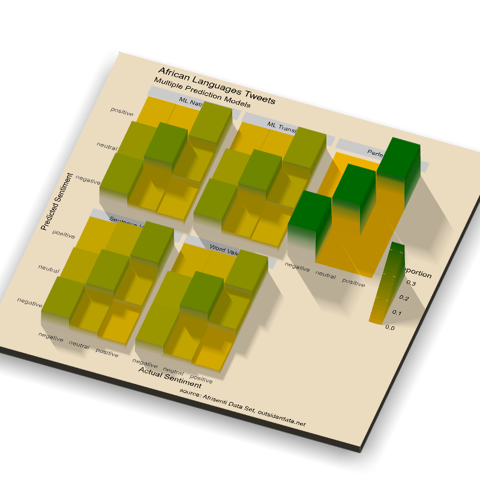

suppressPackageStartupMessages({
library(tidyverse)
library(rayshader)
library(gt)
library(gifski)
})Animating a Heatmap with Rayshader
Wrangle the Data
The best part of any analysis are the visualizations. I couldn’t resist taking the results of our earlier sentiment analysis and turning it into some appealing eye candy.
You’ll recall we tried several different approaches to predicting the sentiment of tweets in various African languages. The main test of fit was a “confusion matrix,” a cross tab of the “true” sentiment vs. what we predicted. The results for each were far from perfect.
For this post we’ll just cut and paste the confusion matrices from each method of sentiment analysis and turn them into a single data frame. While we’re at it, we’ll add a method called “Perfection” which would be the result of a perfect match.
# word valence
wv <- tribble(
~ method, ~truth, ~negative, ~neutral, ~positive,
"Word Valence" ,"negative", 15083, 14619, 6862,
"Word Valence" ,"neutral" , 7761, 23921, 7469,
"Word Valence" ,"positive" , 4720, 13148, 18137
)
sv <- tribble(
~ method, ~truth, ~negative, ~neutral, ~positive,
"Sentence Valence" ,"negative", 17776, 11510, 7278,
"Sentence Valence" ,"neutral", 9624, 18651, 10876,
"Sentence Valence" ,"positive", 5558, 9859, 20588
)
mln <- tribble(
~ method, ~truth, ~negative, ~neutral, ~positive,
"ML Native", "negative", 5524, 4598, 1261,
"ML Native", "neutral", 2489, 7011, 1182,
"ML Native", "positive", 2100, 3287, 4981
)
mle <- tribble(
~ method, ~truth, ~negative, ~neutral, ~positive,
"ML Translated","negative", 5678, 4146, 1432,
"ML Translated","neutral", 2233, 6607, 1483,
"ML Translated","positive", 1905, 3245, 5178
)
perfect <- tribble(
~ method, ~truth, ~negative, ~neutral, ~positive,
"Perfection","negative", 100, 0, 0,
"Perfection","neutral", 0, 100, 0,
"Perfection","positive", 0, 0, 100
)To normalize the data we’ll compute the proportion of outcomes in each cell, rather than the count. The perfect match would see 33% of the outcomes in each correct cell and zero in all the others.
xt <- bind_rows(wv,sv,mln,mle,perfect) |>
pivot_longer(cols = 3:5,names_to = "predicted",values_to = "count") |>
group_by(method) |>
mutate(proportion = count/sum(count))
xt# A tibble: 45 × 5
# Groups: method [5]
method truth predicted count proportion
<chr> <chr> <chr> <dbl> <dbl>
1 Word Valence negative negative 15083 0.135
2 Word Valence negative neutral 14619 0.131
3 Word Valence negative positive 6862 0.0614
4 Word Valence neutral negative 7761 0.0695
5 Word Valence neutral neutral 23921 0.214
6 Word Valence neutral positive 7469 0.0669
7 Word Valence positive negative 4720 0.0422
8 Word Valence positive neutral 13148 0.118
9 Word Valence positive positive 18137 0.162
10 Sentence Valence negative negative 17776 0.159
# ℹ 35 more rowsGet Confused
Now consider some approaches to visualization. First, we might look at the conventional crosstab or, in this particular case, also called a confusion matrix which tabulates the number of correct and incorrect classifications. It’s a super simple viz but let’s use the gt package so we can label the table nicely. This shows just one of our methods.
mle |>
select(-method) |>
gt() |>
tab_header(title = mle$method[1]) |>
tab_spanner(label = "predicted", columns = where(is.numeric)) |>
fmt_number(columns = where(is.numeric),decimals = 0)| ML Translated | |||
| truth | predicted | ||
|---|---|---|---|
| negative | neutral | positive | |
| negative | 5,678 | 4,146 | 1,432 |
| neutral | 2,233 | 6,607 | 1,483 |
| positive | 1,905 | 3,245 | 5,178 |
A Picture is Worth 1000 Numbers
Careful examination of the table reveals that, yes, the predictions agree with “truth” more often than not but it’s not obvious at first glance. If we were to add all our methods the table would get quite busy. A plot will obviously help.
So let’s use ggplot2 to create a facet plot that shows the heat maps of each of our methods. This clearly shows that our methods were sort of on the right track though, as we see, far from “Perfection.”
gg <- xt %>%
ggplot(aes(truth,predicted,fill=proportion)) + geom_tile() +
facet_wrap(vars(method)) +
labs(title = "African Languages Tweets",
subtitle = "Multiple Prediction Models",
x = "Actual Sentiment",
y= "Predicted Sentiment",
caption = "source: Afrisenti Data Set, outsiderdata.net") +
scale_fill_gradient(low = "#FFBF00",high = "#007000") +
theme(plot.background = element_rect(fill = "#FDECCD", color = NA),
legend.background = element_blank(),
axis.ticks = element_blank(),
panel.background = element_blank(),
panel.grid = element_blank())
gg
No 3D Glasses Needed
Good data visualizations clearly tell the story and are ideally more compelling than a grid of numbers. The plot above is good for seeing the difference between our methods and “Perfection” but it’s a little harder to divine differences among the methods. If we create a 3D heatmap it will bring the addition of depth to the heat map.
render_confusion <-
function(theta = 45, sunangle = 315) {
print(sunangle)
shadow_matrix <-
plot_gg(
gg,
width = 7,
height = 7,
multicore = TRUE,
sunangle = sunangle,
scale = 250,
zoom = 0.7,
phi = 50,
theta = theta,
windowsize = c(800, 800)
)
return(shadow_matrix)
}
orig_shadow = render_confusion(20)
render_snapshot(file = "img/3dmap.png")
Move It!
By creating the illusion of height and depth we can more clearly see the diagonal where our predictions match the true sentiment and how many false predictions there are. There is still one problem. The height of the bars has the potential to obscure some other bars and some labels. The way to get around this is to animate the chart to change the point of view. This will complete the 3D illusion.
If you are running this code interactively, a separate graphics window will open and you can manipulate the view with your mouse. For this web document, we’ll save individual frames and splice them together into an animation. Each frame is rendered from a different angle (“theta”). We use rendercamera() to move the rendered image for us and take snapshots as we move. Alternatively, we could change the sunangle for every frame so the shadows would move as we rotate the plot, but that would drastically increase rendering time.
destdir = tempdir()
n = 0
# rotate
for (i in 0:-20){
fname <- paste0("img_", formatC(n, width = 3, flag = "0"), ".png")
print(fname)
render_camera(theta = i, phi = 90)
rayshader::render_snapshot(paste0(destdir, "\\", filename = fname))
n <- n + 1
}
# tilt
for (j in 90:50){
fname <- paste0("img_", formatC(n, width = 3, flag = "0"), ".png")
print(fname)
render_camera(theta = i, phi = j)
rayshader::render_snapshot(paste0(destdir, "\\", filename = fname))
n <- n + 1
}
# rotate
for (i in -20:20) {
fname <- paste0("img_", formatC(n, width = 3, flag = "0"), ".png")
print(fname)
render_camera(theta = i, phi = j)
rayshader::render_snapshot(paste0(destdir, "\\", filename = fname))
n <- n + 1
}
fnames <- dir(destdir)
fnames <- fnames[str_detect(fnames,"img_")]
fnames <- paste0(destdir,"\\",c(sort(fnames),sort(fnames,decreasing = TRUE)))
gifski(fnames,"img/confusion.gif",delay = 1/10,loop = TRUE)
It’s clear from this view that none of our approaches to predict the true sentiment are very good. The best approach, by a little bit, is the machine learning model using the translated tweets.
Just because we can do something cool doesn’t mean that we are adding to our understanding of a question. I am the first to admit that some data visualizations can get gratuitous. In this post I have sequentially evolved the presentation of the results of our analysis from a table to a 3D animation. I hope I have made the case that for our purpose this animation enhances our understanding.